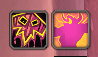

Redtom's Tools
와우 플레이에 필요한 핵심 기능들을 통합 제공하는 경량 편의성 애드온
최신 버전 다운로드 (GitHub Release)
설정창 열기:
/rtt 또는 /redtom
주요 기능
던전·확장팩 순간이동 패널
ESC 메뉴 오픈 시 역대 확장팩 및 현재 시즌 쐐기 던전 순간이동 포탈이 보기 편한 매트릭스 형태로 정렬됩니다.
파티 유틸 및 직업 현황
파티 찾기(PVE) 창 하단에 독/마법/저주/질병 해제 클래스와 블러드, 전투부활, 시너지 보유 인원을 한눈에 확인합니다.
블러드 & 전투부활 추적기
현재 사용된 블러드 지속시간 및 디버프 상태, 사용 가능한 전부 횟수를 미니 아이콘으로 실시간 표시합니다.
카메라 시점 보정 & 최대 시야 확장
카메라 Tilt 각도(0~1.0)와 탑다운 뷰 감쇄율 조절, 최대 시야 거리(최대 2.6) 확장을 네이티브 UI로 제어합니다.
UI 크기 조절 & 아이템 파괴 간소화
ESC 메뉴 및 말머리(대화 연출창) 배율을 자유롭게 변경하고, 아이템 파괴 시 텍스트 입력창 없이 즉시 확인이 가능합니다.
파티 탐색하기 바로가기
파티를 생성한 상태에서도 지원자 목록 하단의 '파티 탐색하기' 버튼으로 파티 리스트를 자유롭게 확인 및 복귀할 수 있습니다.
실제 게임 적용 모습
확장팩 및 시즌 던전 순간이동 패널
ESC 키를 누르면 우측에 오리지널부터 최신 시즌까지의 던전 순간이동 아이콘이 직관적으로 자동 표시됩니다.
파티 유틸리티 현황판 및 파티 중 탐색 버튼
1) 파티 찾기 창에서 현재 파티의 해제/버프 현황을 표시 2) 하단 "파티 탐색하기" 버튼으로 파티 중에도 탐색 창을 오갈 수 있습니다.

블러드 / 전투부활 실시간 현황
블러드 쿨다운(만족감)과 전투부활 잔여 횟수 화면에 배치해 줍니다.
옵션 창
설치 방법
- 상단의 애드온 다운로드 버튼을 눌러 압축 파일(ZIP)을 받습니다.
- 와우 설치 폴더 내
_retail_\Interface\AddOns\경로로 이동합니다. - 압축을 풀어
RedtomsTools폴더 통째로AddOns폴더 안에 붙여넣습니다. - 게임 내에서
/rtt또는/redtom을 입력하여 옵션 창을 열고 원하는 기능을 설정합니다.